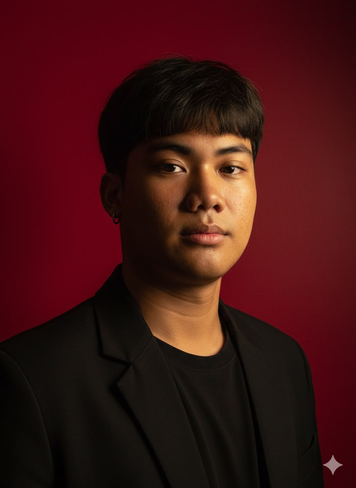

Mahasiswa S1 Teknik Informatika yang sedang belajar pengembangan web dasar, Python, dan C++. Selain itu, saya tertarik pada dunia trading dan memiliki minat di bidang event production. Website ini saya buat sebagai showcase perjalanan belajar dan proyek-proyek saya.
SMK An Nurmaniyah, Teknik Komputer Jaringan dan Telekomunikasi. 2022-2025
S1 Teknik Informatika, Universitas Pamulang. 2025-Sekarang
5.000+ kali ditonton
Berperan sebagai Produser dan Floor Director. Sebagian besar konsep dikembangkan dari ide saya. Hasil akhirnya berupa video berdurasi sekitar 9 menit yang telah ditonton lebih dari 5.000 kali di Instagram Reels akun resmi smkyapera_hits.
Tonton VideonyaProgram untuk mengelola nilai mahasiswa menggunakan array satu dan dua dimensi, termasuk mencari nilai tertinggi dan terendah.
Script sederhana untuk mendeteksi jumlah logical CPU pada komputer
menggunakan modul os.
Website portofolio pertama saya, dibuat dari nol dan sudah dipublikasikan online.